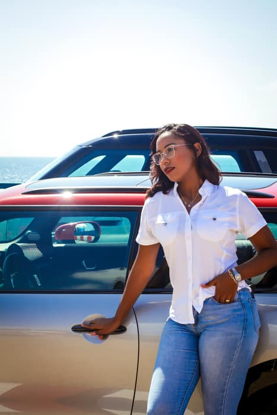
Retratos
Sesiones personales que capturan tu esencia con luz y actitud.
Capturamos
Fotografía profesional deportiva, corporativa, gastronómica y de eventos en Santo Domingo — historias reales, contadas con color y energía.
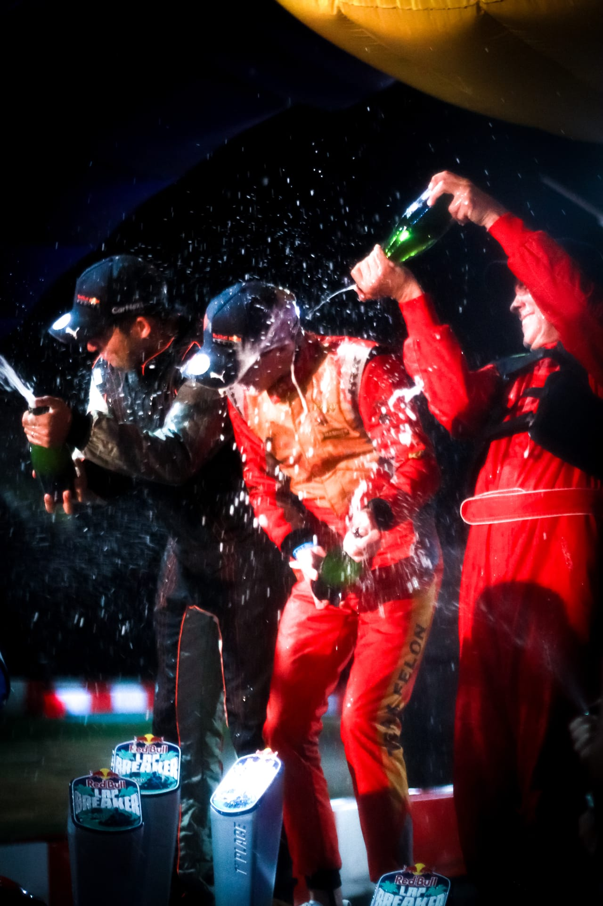
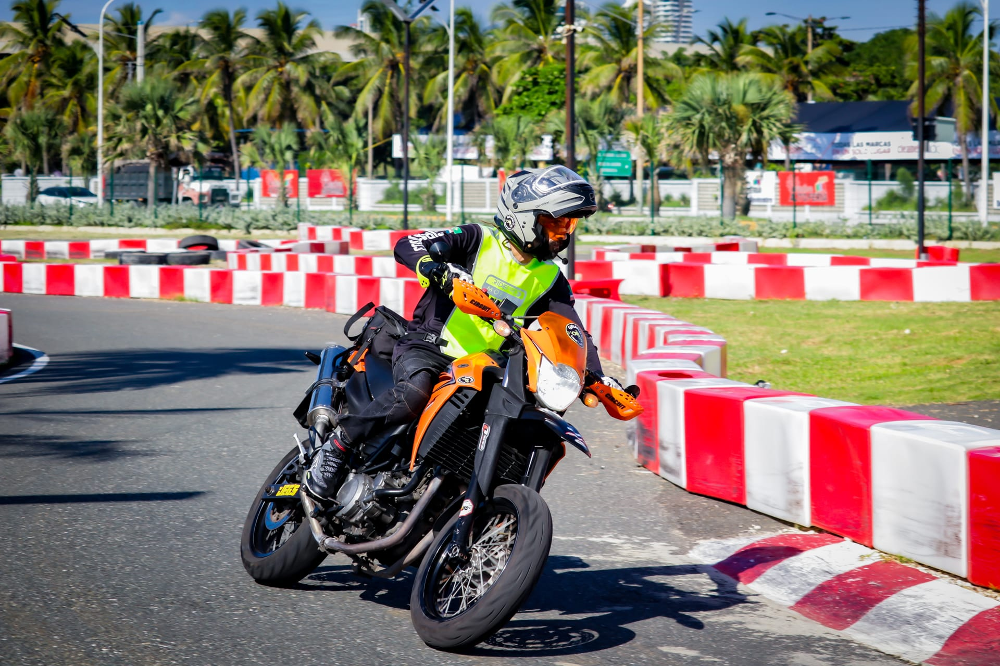
Mis especialidades

Sesiones personales que capturan tu esencia con luz y actitud.
Adrenalina, velocidad y acción congeladas en el instante perfecto.
Cobertura profesional de TV, radio, podcasts y eventos de empresa.
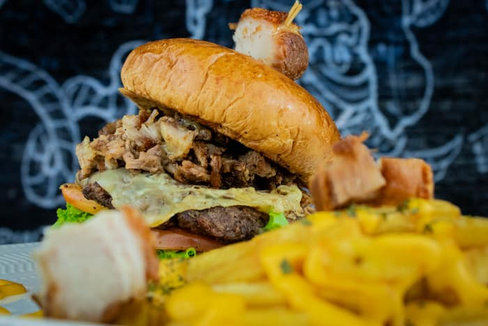
Platos que dan hambre con solo mirarlos, listos para tu menú o redes.
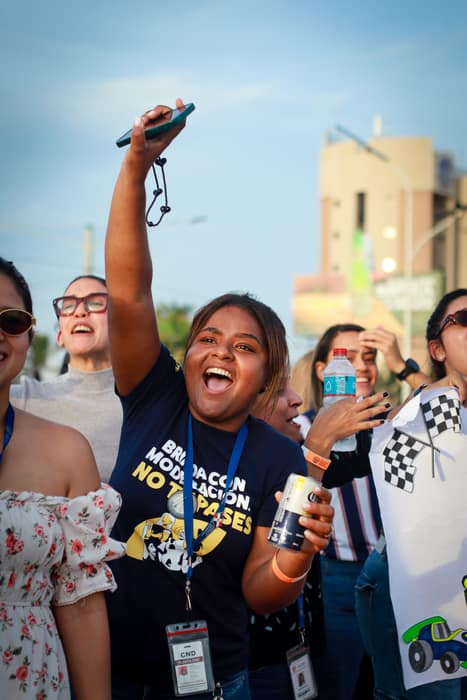
Fiestas, celebraciones y encuentros capturados con energía real.
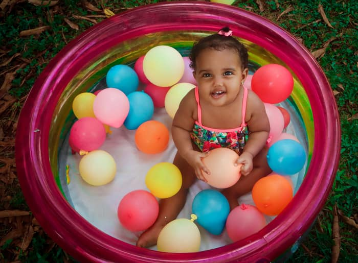
Ternura y risas genuinas en cada sesión con los más pequeños.
Portafolio
Una selección real de mis sesiones: deportivas, corporativas, gastronómicas, eventos, retratos y familia.
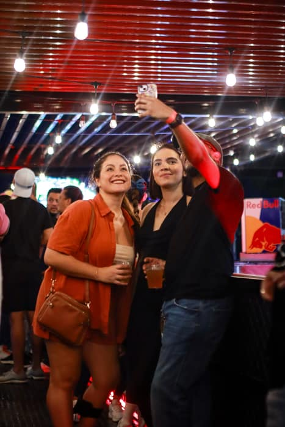


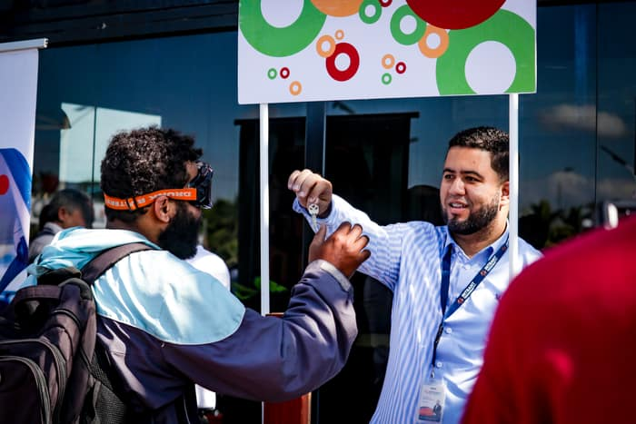
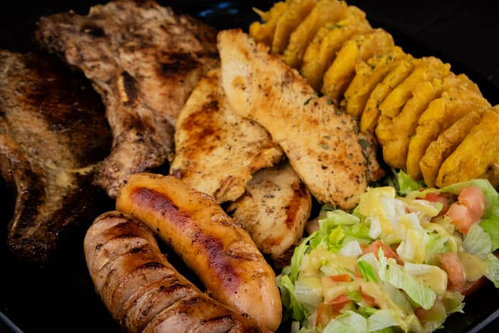
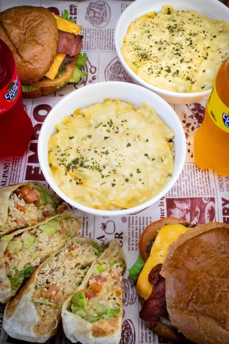
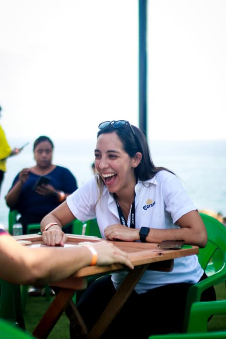
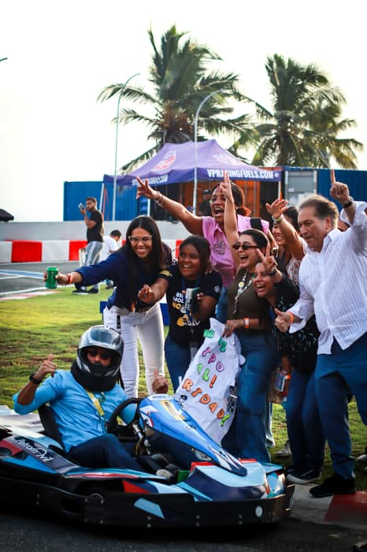
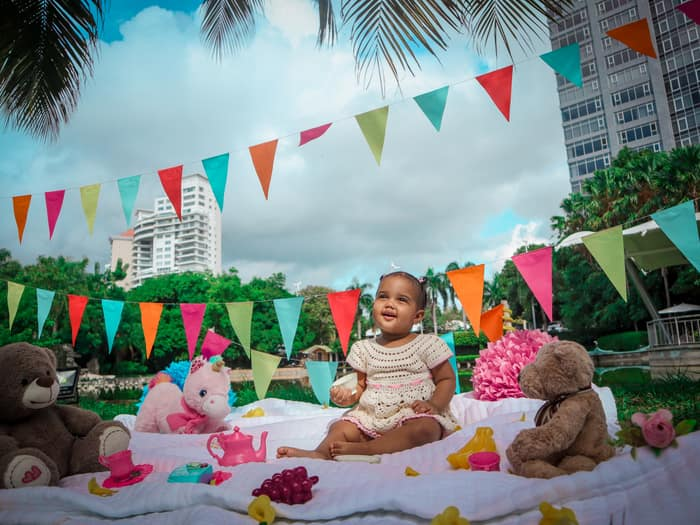
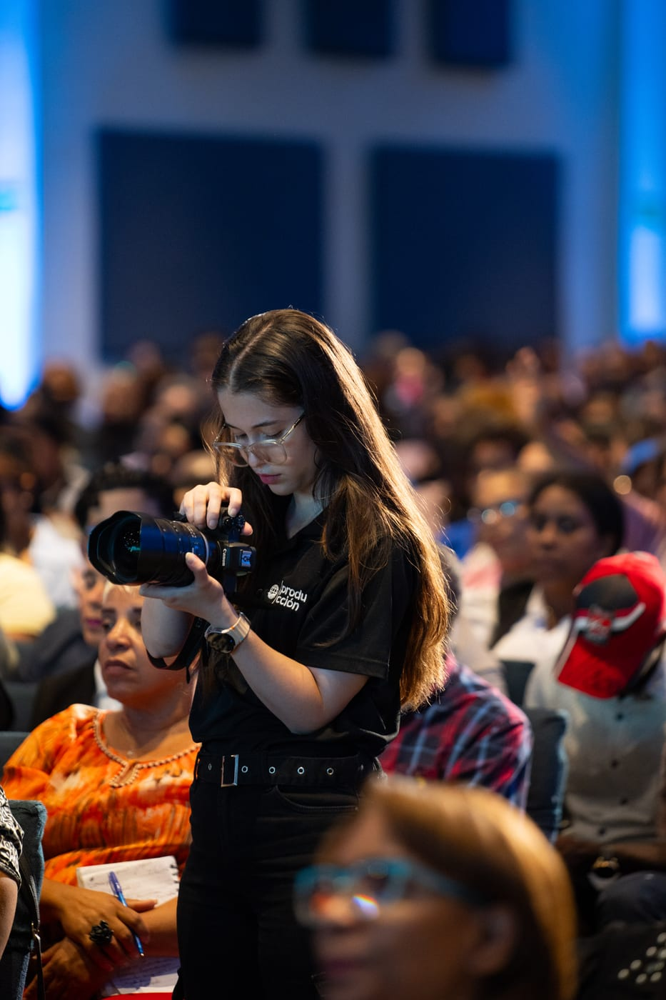
Sobre mí
Soy Fabiana, fotógrafa de Fayanap Studio en Santo Domingo. Me apasiona capturar la esencia de cada momento — desde la adrenalina de una pista de carreras hasta la ternura de una sonrisa infantil. Cada sesión combina técnica, color y sensibilidad para contar historias auténticas que perduran.
Ideas originales para cada proyecto.
Años capturando momentos únicos.
Cada foto es hecha con amor.
Testimonios
¿Hablamos?
Cuéntame tu idea y armamos la sesión perfecta para tu historia — deportiva, corporativa, familiar o de evento.